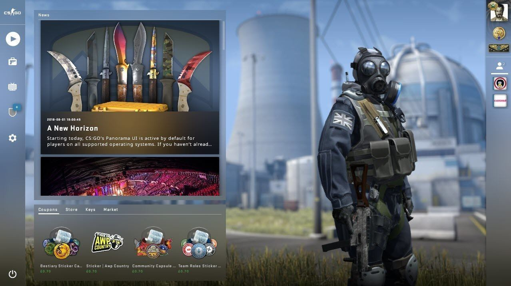
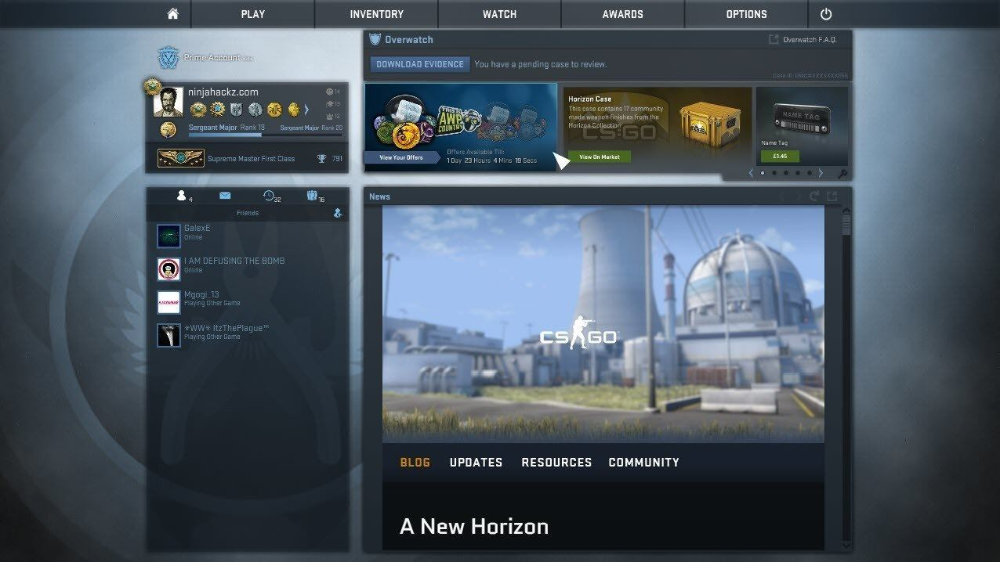

How to disable Panorama UI in CS:GO
In a recent CS:GO update, Valve decided to force users to move to their new csgo UI and enabled Panorama by default for all users.
Now, even though our csgo hack supports panorama, if you still want to use the old UI, you can easily do so with just a few clicks.
- Go to you steam game library;
- Right click on Counter-Strike: Global Offensive and go to properties;
- lick on "SET LAUNCH OPTIONS" button;
- Type in the launch options field "-scaleform" and click OK.
If you then decide to go back to panorama, just delete the "-scaleform" text and it should go back to normal.
CSGO Panorama UI
CSGO Scaleform UI